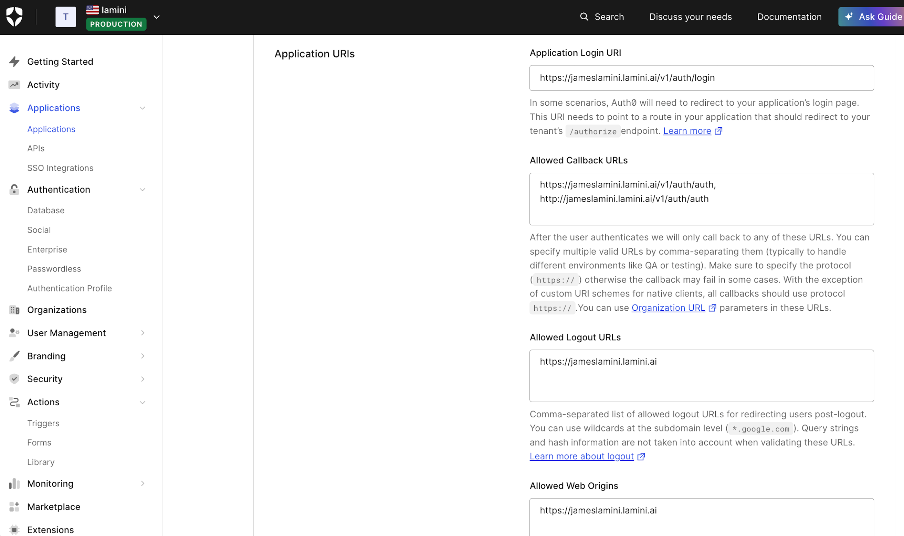
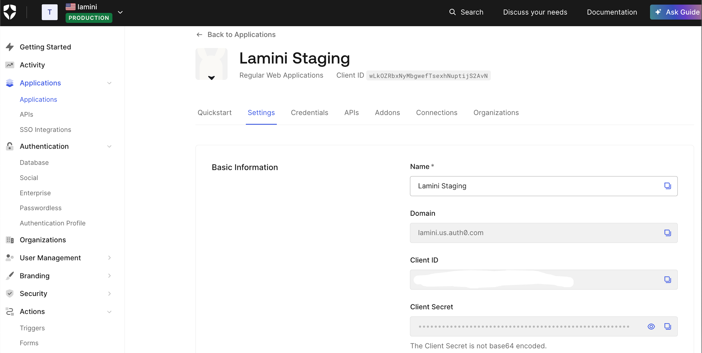

Auth Setup
Prerequisites
This example uses auth0.com as the authentication provider.
Step 1: Configure Authentication
Configure Auth0 as shown:

Obtain the necessary Auth0 information:

set auth.disable_auth to False in llama_config_edits.yaml:
Add the following credentials from your application setup on Auth0 in llama_config_edits.yaml:
auth_provider:
client_id: <client_id>
client_secret: <client_secret>
server_metadata_url: <server_metadata_url>
Run the ./generate_helm_charts.sh script to regenerate the lamini folder.
Step 2: Add a New User and Token
After installation, sign up a new user. We recommend using a group email such as engineer@example.com so that access isn't tied to a specific employee's account.
Replace the test_token in llama_config_edits.yaml with the API key of engineer@example.com:
Delete the existing lamini folder, then run ./generate_helm_charts.sh again to regenerate it.
Step 3: Set the Admin Token
Update the admin_token in lamini/values.yaml with the corresponding API key:
Step 4: Disable the Test Token (Optional)
You can disable the test token in the database with the following SQL command: